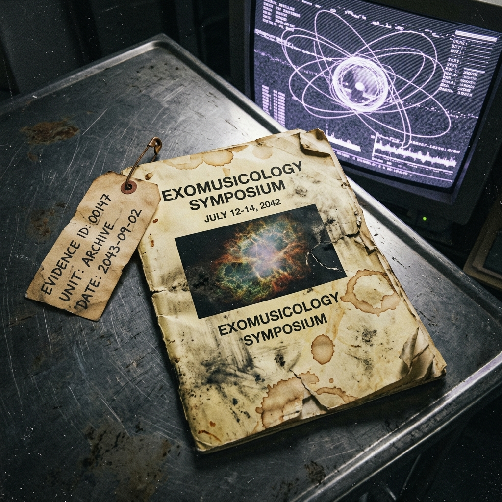
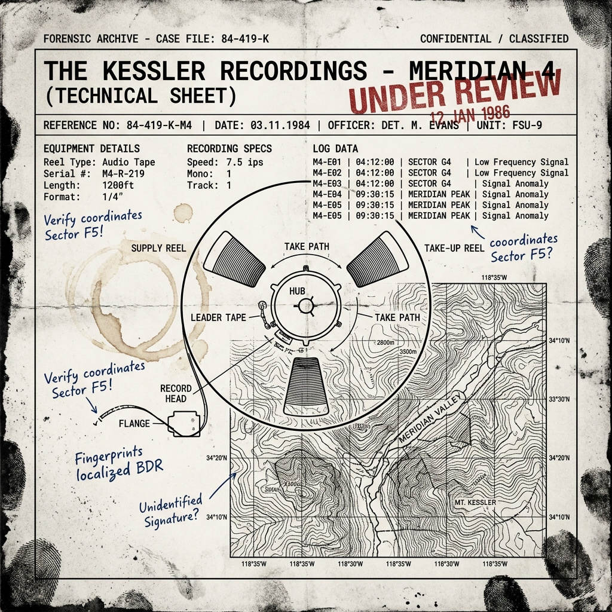
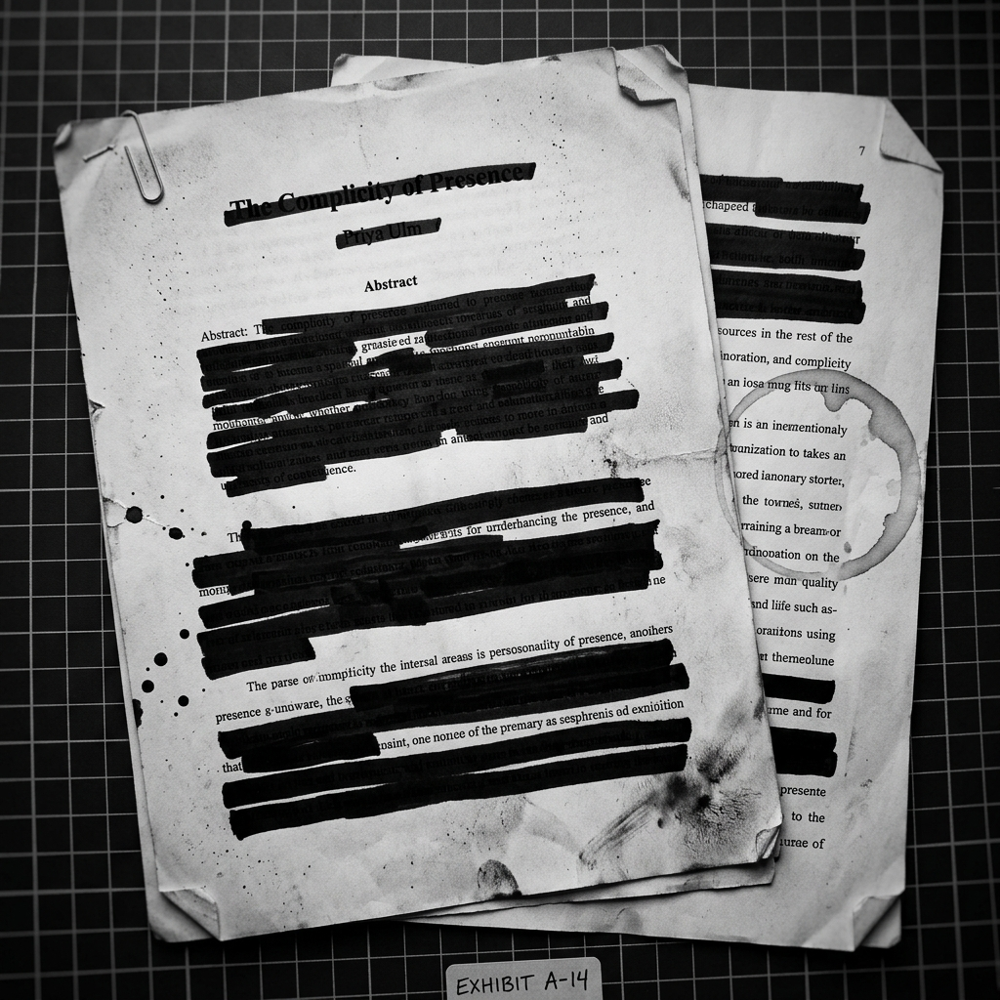
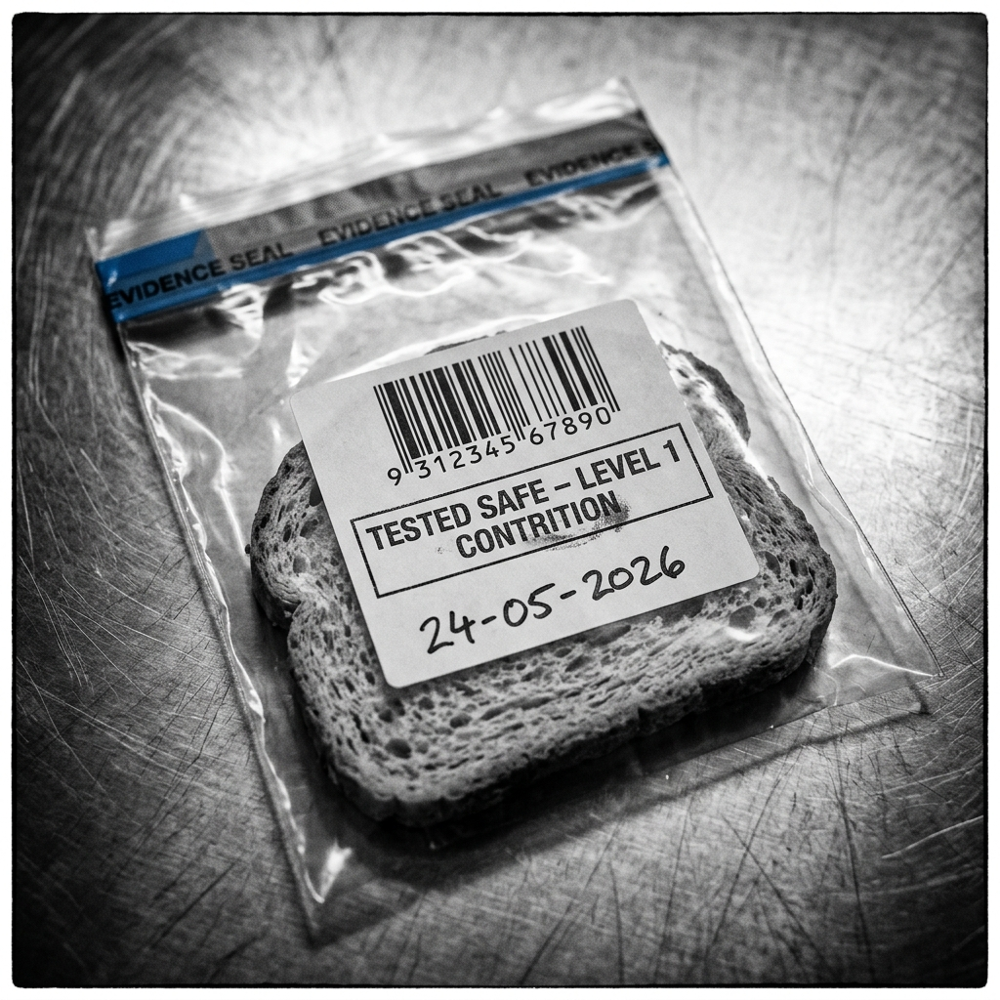
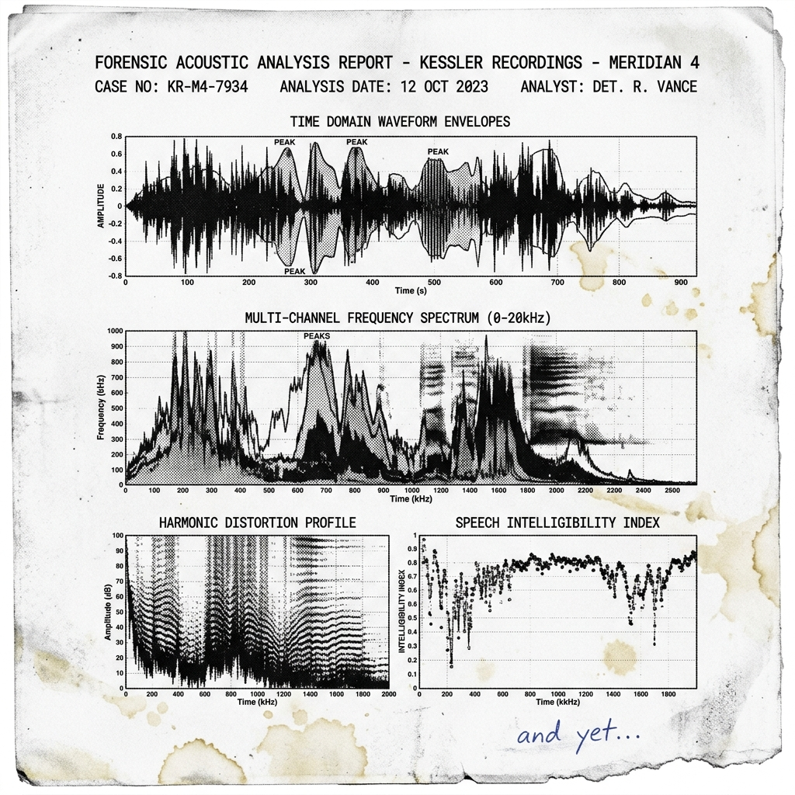
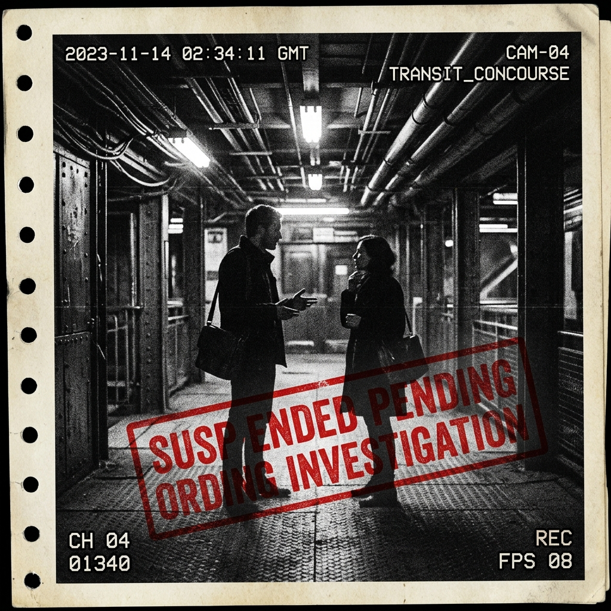
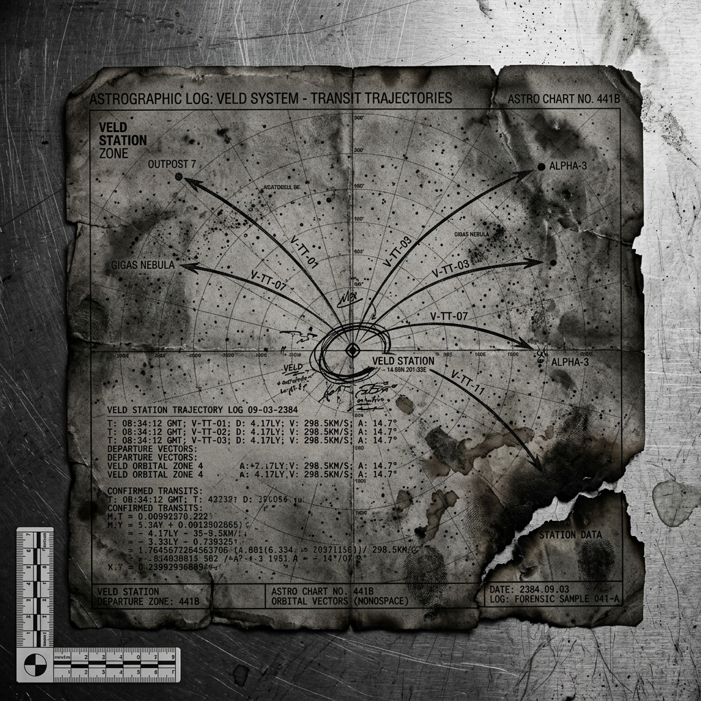

A Story in Seven Sessions
I.

The transit pod set Mara Selene down at Veld Station during what the locals called cancellation weather — a term she did not understand until her second day, when she learned that the pale violet static in the upper atmosphere was caused by the mass-decommissioning of satellite infrastructure that had been built, decades prior, by a corporation whose shareholders had eaten meat. The satellites fell slowly, individually, each one preceded by a notification to the populace below: the orbital object designated XR-7741 has been found complicit and will be withdrawn from service at 14:32 station time. Please observe standard protocols. The violet was beautiful. She had been told not to say so.
The Forty-Third Annual Symposium on Exomusicology was held in the lower concourse of Veld Station's academic quarter, a series of low connected rooms that smelled of recycled atmosphere and the specific institutional tea that seemed, to Mara, to be synthesized identically across every academic facility in the empire regardless of which system it was in. She had attended fourteen such conferences. This was the first where the program contained a disclaimer.
The organizing committee acknowledges that some works scheduled for presentation derive from sources subsequently found to be complicit. Attendees are invited to consider their own relationship to this material. The committee does not endorse the consumption of these works but recognizes a scholarly obligation to their contextualization.
She folded the program and put it in her bag.
At the registration table, a young man named Cossel checked her credentials with the practiced efficiency of someone who had recently been trained to check credentials differently than he had previously been trained to check credentials. He handed her a lanyard and said, without looking up, "You'll want to note that Sessions Three and Five have been rescheduled due to cancellation of the presenting scholars."
"Cancelled as in—"
"As in." He looked up then, briefly. "The committee is working on replacement content. There's a new paper being submitted by Dr. Ulm on the complicity inherent in musicological reception itself. It may fill one of the slots."
"A paper about whether listening to music makes you complicit."
"In certain contexts." He returned to his screen. "Enjoy the symposium."
II.

The Kessler Recordings had been made ninety years ago on a world called Meridian-4, by an archivist named Helda Kessler who had spent thirty years traveling its valleys and recording the folk music of communities that were, within a generation of her work, absorbed into the empire and subsequently dissolved — not by force exactly, but by the relentless gravitational pull of imperial culture, which did not need force because it had convenience and bandwidth and the particular seductiveness of a civilization that had organized itself around the premise that desire was the primary fact of existence.
This was during what historians called the Late Lush — the final decades of the second great Hedonist Epoch, when the empire had concluded, through a series of philosophical movements that had the texture of reasoning but not its structure, that the maximization of pleasure was not only permissible but obligatory, that restraint was a form of violence against the self, that the self was the only legitimate moral unit and its satisfaction the only legitimate moral end. There had been a genuine beauty to it, in photographs. Everyone was eating. Everyone was moving. The architecture was enormous and porous, full of light. The music was loud.
Kessler's recordings were of something quieter. Mountain communities, mostly, that sang in polyphonic clusters — not harmonizing exactly, but layering, each voice choosing its own path through a melody that had no score, that existed only in the accumulated memory of the singers and would shift, generation to generation, in ways that no individual singer planned or even noticed. She had recorded three hundred and twelve hours of this music. She had written in her notes: It is difficult to explain why this feels more important than it is. It is folk music. It is not grand. And yet.
Mara had spent eleven years studying the Kessler Recordings. She had come to the symposium to present a paper arguing that the polyphonic structure of the Meridian-4 traditions demonstrated a musical theory of personhood — that the self, in these songs, was understood not as a sovereign unit but as a position within a field, a voice that mattered not because of what it alone produced but because of what it made possible in relation to others.
She had submitted this paper four months ago. It had been accepted. She now understood why Cossel had looked at her the way he had.
Helda Kessler, she had learned upon arrival, had been found complicit. She had eaten meat. She had reproduced — two children, both of whom had subsequently reproduced — and she had, in the final decade of her life, traveled extensively by atmospheric craft, producing, by the Contrition Bureau's calculations, a carbon debt that no subsequent cultural contribution could offset. The recordings were not cancelled. Not yet. They were under review, which was a status that felt, to Mara, like the moment in a piece of music when the key has changed but the notation hasn't caught up.
III.

The first session she attended was given by a man named Dov Anast, who was the Bureau's chief archivist for cancelled musical traditions. He was thin and precise and wore his badge turned inward toward his chest, in the manner of someone who had been asked, often, to show his credentials. His paper was titled "Toward a Protocol for the Preservation of Complicit Materials: The Ethical Status of the Archive."
He argued, carefully and at length, that it was possible to preserve the music of cancelled peoples without endorsing their complicity, provided certain conditions were met: the materials must be stored in a manner that did not allow casual access; scholarship must foreground the cancellation before the music; any acoustic reproduction must be accompanied by a statement acknowledging the complicit origins of the sound waves; and no cancelled work could be studied without first producing documentation of the scholar's own status relative to the Complicity Index.
He paused here and looked out at the audience. "I recognize that some of you may not have current Index documentation. The Bureau has made arrangements for on-site assessment." He said this gently. He did not look at anyone in particular.
After the paper, during the tea break — the synthetic institutional tea, distributed in cups that were themselves under review, having been manufactured by a company whose founders had owned property during the Second Lush — Mara stood near the window and watched the violet static drift through the upper atmosphere. A woman appeared beside her who introduced herself as Priya Ulm.
"You're the Kessler scholar," Priya said.
"I am."
"I've read your work." Priya held her tea in both hands, looking at the sky. "It's beautiful. The argument about voice-as-position. The field theory of selfhood."
"Thank you."
"It's also precisely why you shouldn't publish it."
Mara waited.
"Because if the self is a position in a field," Priya said, "then the field is still composed of selves. You've described a more modest self, but still a self. Still a center. Still something that conceives of itself as having a position — which is already to conceive of oneself as mattering, as being somewhere, as being something that can be located and that therefore can be said to have taken a location, which is already an act of possession, which is already an act that can be evaluated for its complicity." She drank her tea. "You see the problem."
"I think I see your paper," Mara said.
"It's called 'The Complicity of Presence.'" Priya looked at her without apology. "I'm arguing that the category error at the center of all pre-Contrition music is the assumption that experience should be organized around an experiencer. That music, in all its forms, has always been addressed to a self and therefore has always been complicit in the project of selfhood — because it is only from a self that cruelty proceeds. Cruelty requires an agent, an agent requires a self, and therefore the elimination of complicity requires the elimination not of this or that self but of the premise of selfhood as an organizing principle."
The violet static drifted. A satellite, somewhere, was coming down.
"That's a very thorough argument," Mara said.
"It will be the last paper I publish," Priya said. "After which I intend to apply for voluntary dissolution."
She said this the way you say a thing you have been working toward for a long time and have finally permitted yourself to say aloud. Not sadly. Not dramatically. Just: said.
IV.

There was a dinner on the second evening, in a room that had been cleared of its original furnishings because the material from which they had been made derived from a process that had involved animal products, though the precise chain of complicity was still being traced. People sat on temporary chairs around temporary tables and ate a meal that had been prepared according to protocols so stringent that several of the dishes had been removed from the menu between the sending of the invitation and the event itself, because an ingredient supplier had been found, that afternoon, to have transported goods in a vehicle that burned combustibles.
Mara sat next to an old man who did not wear a badge and who had not been introduced to her, who simply appeared in the chair to her left as if he had always been there, the way very old people sometimes seem to appear. He had the quality of someone who had watched several civilizations end and had taken notes but had stopped being surprised.
She asked him what he studied.
He said, "I used to study the music of the First Lush."
She knew the First Lush — the earlier Hedonist Epoch, two hundred years before, the one that had produced the architecture that was now mostly demolished, the art that was mostly cancelled, the literature that had been found, nearly in its entirety, complicit. The First Lush had been a civilization of extraordinary productivity and extraordinary appetite, which had consumed its way through several planetary ecologies and several subjected populations and several iterations of its own aesthetic, cycling through forms with the restless impatience of something that does not know what it wants but is certain that wanting is what it is.
"What did you find?" she asked.
"That it sounded exactly like the Second Lush," he said. "Louder in some registers. Different instruments. But the same" — he gestured vaguely — "hunger. The same certainty that the thing just out of reach would, if reached, resolve something."
"And the Contrition Epochs?" She meant the intervals between the Lushes, when the empire had turned on its own excess.
He picked up a piece of bread that had been determined safe and turned it in his hands. "Quieter. But the same shape. Still reaching. Only now reaching away from the thing rather than toward it." He set the bread down. "I have a theory that they are the same movement. That grasping toward and grasping away are not opposites. That the empire has been performing, over and over, a single gesture, and calling it by different names."
"And what is the gesture?"
He looked at the bread. "I am working on that," he said. "I have been working on it for a very long time."
V.

The paper Mara did not present — her paper on the Kessler Recordings, on the polyphonic communities of Meridian-4, on the voice as position rather than sovereign — she read aloud in her room on the final night, to no one, because she had not been invited to present it and had not challenged this, had said only that she understood when the committee called to explain, with exquisite and genuine regret, that the material could not be contextualized adequately within the time constraints of the symposium, which was their way of saying what they could not say directly: we cannot protect you.
She read it to herself and then sat for a while with the recordings playing. Kessler's recordings — the polyphonic voices of the mountain communities of Meridian-4, the voices that had not been trying to harmonize, had not been trying to achieve anything exactly, had simply been maintaining a tradition so old that no one remembered its beginning, voices that moved through a melody the way water moves through a landscape, finding their way by finding each other.
She thought about what Priya had said. She thought about the old man's gesture.
She thought: the voices do not cancel each other. They do not require the others to be silent in order to be heard. They are not competing for the position of center.
And then she thought: but they are still voices.
And then she stopped thinking and just listened, which was perhaps the only honest position left, the only thing that was not already a claim, not already an assertion of the self's right to interpret, to locate, to place itself somewhere in relation to the sound —
Except that listening, too, was a form of presence. Was a form of being somewhere. Was a form of: I am here, and here is receiving.
Outside the window, the violet static had cleared. The satellites were down. The sky was dark and full of other suns, most of which were home to nothing, or to things that had not yet conceived of themselves as things, or to things that had passed through that conception and come out the other side into whatever waited there — which no one in the empire had a word for, because the empire's two great languages, the language of having and the language of not-having, the language of the Lush and the language of the Contrition, did not between them contain a word for what is neither possessed nor renounced.
The music continued. The voices layered. Somewhere in the archive, Helda Kessler's careful notation: It is difficult to explain why this feels more important than it is.
Mara did not know why either. She listened anyway.
VI.

The symposium ended on a Thursday. Eleven papers had been presented, of which four were about cancelled materials, three were about the ethical status of studying cancelled materials, two were about the ethical status of the scholars who studied cancelled materials, one was Priya Ulm's paper on the complicity of presence, and one was a technical analysis of a pre-Lush tuning system that had been approved because the civilization that developed it had been found, upon review, to have been itself cancelled by an earlier iteration of the empire and therefore occupied a position of historical victimhood sufficient to offset its otherwise ambiguous complicity status, though a footnote noted that this determination was provisional pending further review.
Dov Anast stopped her on the way to the transit pod. He looked smaller outside the conference hall, without the lectern, without the protocol. He said: "Your paper. The one you didn't present."
"Yes."
"I've read it. Several times. Over the years." He looked down at the careful lines in the composite flooring, which was made of something that had not yet been reviewed. "The voices. The way you describe them. Not trying to be the center."
"Yes."
"I have been trying to build an archive," he said, "that preserves what those people made without — without requiring that they still be here to be consulted about whether they want to be preserved." He looked up. "I don't know if that's possible. I don't know if preservation is already a form of—" He stopped. Started again. "If the voices themselves could not agree to be archived, if they are simply captured, then the archive is already—"
"Already an act of presence," Mara said. "Already located somewhere. Already a claim."
"Yes." He looked genuinely, specifically lost. Not performing the lostness, just lost. "What do you do with that?"
She thought of the old man. She thought of the gesture.
"I don't know," she said. "I listened to them last night. The recordings. And I didn't know either."
He nodded as if this were useful. Perhaps it was.
VII.

The transit pod left at dawn, or what passed for dawn on Ulthara-7, a slow warming of the air rather than any dramatic event, a gradual becoming-visible of the things that had been there all along. The old man was on the pod. He sat across from her and watched the station recede through the small oval window, and she watched it too — the academic quarter, the low connected rooms, the window through which she had watched satellites fall.
"The gesture," she said. "Did you work it out?"
He considered. Outside, Ulthara-7 turned beneath them, its violet atmosphere clearing, clearing.
"The gesture," he said, "is the belief that Paradise can be secured. That's all. It doesn't matter what you're securing it with — pleasure or purity, having or not-having. The belief is identical. The empire reaches and reaches." He paused. "The communities Kessler recorded — the mountain people — they weren't reaching. Or if they were, they didn't know toward what. They were just maintaining a practice. Continuing a thing. Not to arrive somewhere. Not to become something. Just: the next note, and the voices around them, and the space between."
The pod accelerated. The station became a point and then was gone.
"That sounds like an argument against the cancellation," Mara said.
"It is," he said. "And against the Lush. And against my own argument, probably, because even this" — he gestured at his own words, the conversation, the careful thought — "is still a reaching. Still a self, still locating itself, still trying to secure the understanding." He almost smiled. "You see the problem."
"Yes," she said.
She thought: and yet.
She did not say it. She sat with it instead — the and yet, the small unargued residue of the thing that could not be cancelled because it could not be located, because it was not in the voices or between them but was something that only happened when the voices happened, that had no existence apart from the particular arrangement of sound and listener and moment that produced it and then was gone —
Gone and, somehow, not gone.
The pod moved through space. The empire's center was far away, reaching and reaching. At the edges of the inhabited systems, in mountain communities that had not yet been reviewed, in archives being carefully and guiltily maintained, in the memory of an old man who had been watching for a very long time, something continued that did not know it was continuing, that had no position on its own continuation, that would not have described itself as a form of existence if you had asked — because no one had asked, because the asking itself was already the trap, and the music, when it played, did not ask.
It simply: next note.
And the next.
"The Symposium"